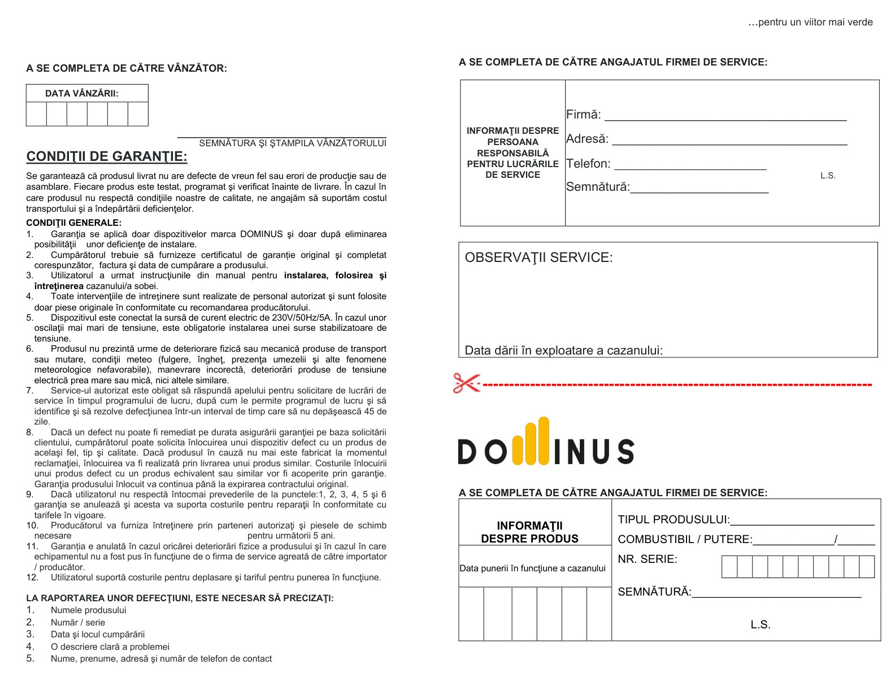

Completează datele mai jos. Se salvează automat doar pe acest telefon. La imprimare, datele și semnăturile sunt așezate pe cele două pagini originale. Verifică previzualizarea înainte de emitere. Rubricile fabricantului și vânzătorului se completează numai de persoanele autorizate. Data vânzării se afișează pe ambele pagini. Data punerii în funcțiune se afișează în două rubrici pe pagina 2.
Previzualizare certificat


PDF: alege „Imprimă / Salvează PDF”, apoi „Salvează ca PDF”. Pentru salvare PDF pe Android selectează A4 și orientarea Peisaj (orizontal), dacă este disponibil, fără margini și fără antet/subsol, dacă apar opțiunile. Documentul original este adaptat la A4 orizontal pentru imprimare.